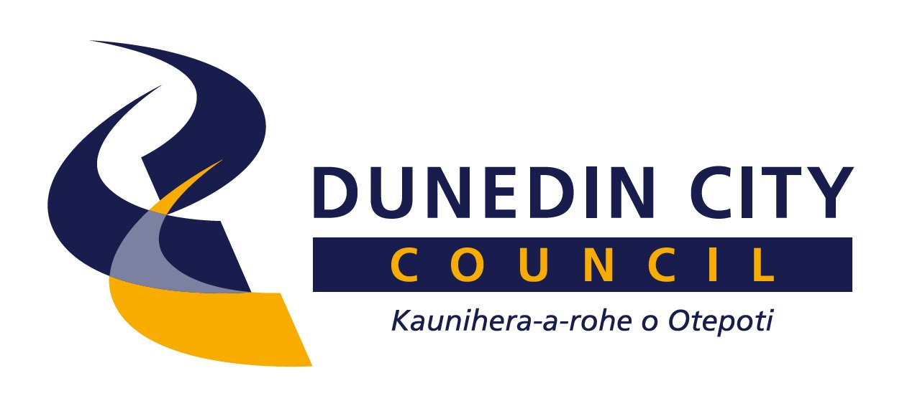
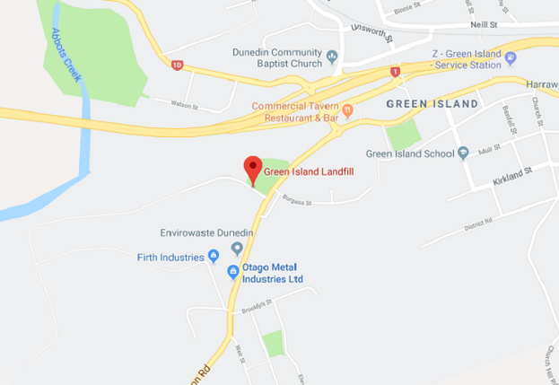
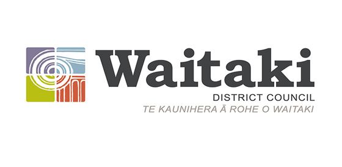
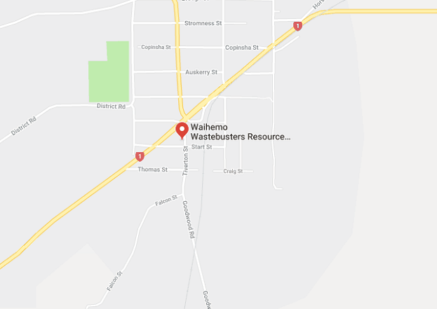
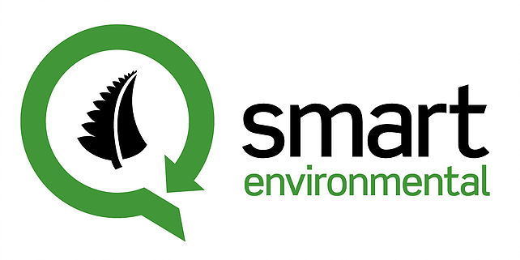
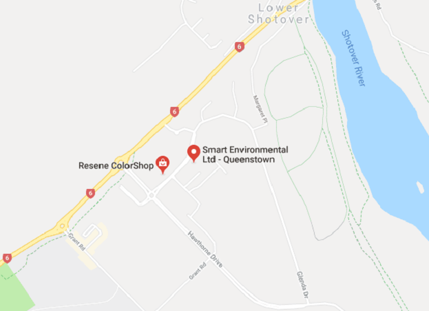

Where to recycle in dunedin?
Otago has dedicated companies whos job it is to safely recycle and to dispose of the rubbish that is created. Theses companies are responsible for taking care of the envrioment to ensure that this planet doesn't get riddled with harmful trash.
| Monday | 8am - 5pm |
| Tuesday | 8am - 5pm |
| Wednesday | 8am - 5pm |
| Thursday | 8am - 5pm |
| Friday | 8am - 5pm |
| Saturday | 8am - 5pm |
| Sunday | 9am - 5pm |

Green Island Landfill
Location: 9018/9 Brighton Rd, Green Island, Dunedin 9018
Phone: 03-488 4741
 Learn More| Monday | 8am - 5:30pm |
| Tuesday | 8am - 5:30pm |
| Wednesday | 8am - 5:30pm |
| Thursday | 8am - 5:30pm |
| Friday | 8am - 5:30pm |
| Saturday | 8am - 5:30pm |
| Sunday | 9am - 5:30pm |

Waihemo Wastebusters
Location: 27 Tiverton St, Palmerston, 9430
Phone: 03-465 7431
 Learn More| Monday | Closed |
| Tuesday | 12am - 3pm |
| Wednesday | Closed |
| Thursday | 12am - 3pm |
| Friday | Closed |
| Saturday | Closed |
| Sunday | 12am - 3pm |

Smart Enviroment
Location: First, Floor Unit 4/26 Glenda Dr, Frankton, Queenstown, 9349
Phone: 03-451 0105
 Learn More| Monday | 8:30am - 5pm |
| Tuesday | 8:30am - 5pm |
| Wednesday | 8:30am - 5pm |
| Thursday | 8:30am - 5pm |
| Friday | 8:30am - 5pm |
| Saturday | Closed |
| Sunday | Closed |